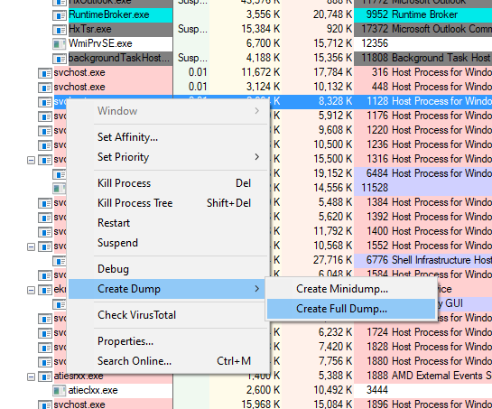

Setting up WinDBG for analyzing memory dumps
When I needed to investigate a memory dump for a first time, I stared at WinDBG window, not knowing how to begin. My google-fu yielded mixed results - I had to sift through lots of information, sometimes incorrect, sometimes outdated, only after some experimentation, I was able to actually understand what was going on.
Though, in a hindsight, WinDBG is much less complex than it seemed in the first place.
A word (or three) on WinDBG
WinDBG wikipedia article states that WinDbg is a multipurpose debugger for the Microsoft Windows computer operating system, distributed by Microsoft
That is nice, but what does it mean?
Essentially, WinDBG provides a GUI and a CLI for a debugging engine (defined in DbgEng.dll) that comes as part of Debugging Tools for Windows, an engine that can debug both user-mode and kernel-mode code. As far as I know, WinDBG is also used to develop Windows itself by Microsoft devs, it is a low-level debugger without all the bells and whistles of Visual Studio, but it is very very powerful.
Why CLI? Because most of the interaction with the “debugee” will be done using text commands typed in WinDBG command propmpt.
By the way, there are more debuggers that share the same engine - CDB for user-mode debugging and KDB for kernel-mode debugging. The only different between CDB, KDB and WinDBG is that CDB/KDB are console only and can debug only user-mode and kernel-mode respectively, while WinDBG has UI and can be used to debug both modes.
In case all of this new to you, kernel-mode debugging means that you debug operating systems and drivers, and user-mode debugging means you debug regular programs that run within OS
First Steps
Since we are talking about analyzing a memory dump, the first step would be to actually get a memory dump, which is essentially a snapshot of all that the process contains, things like thread information, allocated memory etc. This can be done via multiple tools, but personally, I usually use Sysinternals Process Explorer
Simply select the process you’d like to take a memory dump of, right click and… that’s it.

Mini-dumps are very small and contain only information about threads and full dumps contain pretty much everything, their size is much larger, of course.
Now that we have a dump, we need to open it. WinDBG is a part of Debugging Tools for Windows as well, but I would recommend using WinDBG Preview version - which has the same features as “original” WinDBG, is quite stable and has much better performance (it utilizes multiple CPU cores, unlike the “original”).
The dump is opened, now what?
First, we need to properly setup PDB file sources. The idea is to provide a local cache for symbol files and supply symbol server addresses for both Microsoft system libraries and other symbol servers.
If you are not sure what PDB files are, take a look at the article “PDB Files: What Every Developer Must Know“.
In order to configure PDB sources, you need to specify them in a symbol server search path format. This can be done either in WinDBG GUI or by setting _NT_SYMBOL_PATH environment variable.
For example, on my dev machine, it looks like this:
1 | cache*e:\Symbols;srv*e:\Symbols*https://msdl.microsoft.com/download/symbols |
The format is cache*[local cache folder 1]*[local cache folder 2];srv*[local cache folder]*[symbol server path]
What if symbols are missing or there is an issue? In this case, use !sym noisy on command to see what symbols are missing and where WinDBG tries to look for them - after this command, each operation that requires symbols would print information on where they were found.
Notice how after executing a !threads command, WinDBG outputs where did if looks for .Net Core symbols.
1 | 0:000> !sym noisy on |
Dump is open and symbols are configured. Now what?
Thats it. Now, you start debugging!
Note that WinDBG is highly extensible, most of its commands are provided by extensions. By default, ext.dll extension gets loaded automatically, but if you have a memory dump of a .Net process, then you will need to use SOS extension (Son of Strike).
commands provided by extensions always have the
!prefix
SOS extension
This extensions provides information about .Net internals; it is installed with .NET Framework.
So, how to load this extension? Simply, run the following command if you want to analyze memory dump taken from full .Net Framework process
1 | .loadby sos clr |
And if you took the memory dump from .Net Core process, the command would be slightly different/
1 | .loadby sos coreclr |
However, there is a very annoying gotcha: in order to properly analyze a .Net memory dump, loaded sos.dll must match the exact version of .Net the process ran under (because sos.dll is built as part of the framework)
In case of version mismatch, you may see an error like this:
1 | 0:037> !clrstack |
If you have this problem, you can either fetch the correct sos.dll from the machine the dump was taken on or use an undocumented behavior described in an awesome blog post: Automatically Load the Right SOS for the Minidump
SOSEX extension
There is a very useful extension that provides many convenience debugger functions - SOSEX. It can be downloaded from the blog of its creator.
After you download, unzip the dll to some folder, then run the following command in WinDBG (after loading SOS plugin, of course)
1 | .load e:\sosex_64\sosex |
Note that the
dllfilename is written without extension. Also, the “old” WinDBG cannot handle whitespaces in the path well, so you should either use the WinDBG Preview or extract the SOSEX plugin into a path without whitespaces.
Conclusion
This is the kind of post I wish I had when I started using WinDBG. Hopefully, you will find it useful.